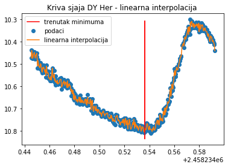
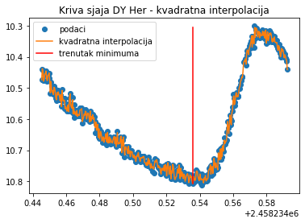
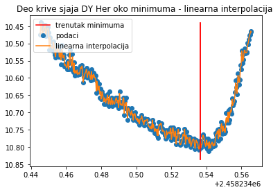
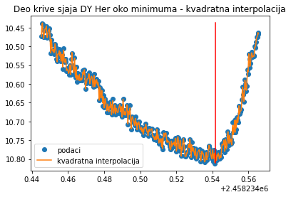
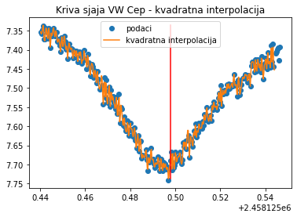
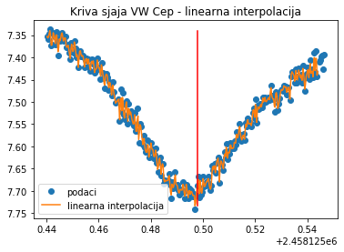

1. Predlog projekta
Eklipsno dvojne zvezde su zvezde koje orbitiraju jedna oko druge i na čijoj se krivi sjaja mogu
uočiti primarni i sekundarni minimum, nastali kao posledica međusobnog pomračenja
komponenti sistema. Fotometrijskim snimanjem promene magnitude dvojnog sistema u
odnosu na referentne zvezde (čija je magnituda konstantna), može da se dobije pomenuta
kriva sjaja.
Višedecenijskim posmatranjima, kod velikog broja dvojnih sistema detektovano je da se
njihov orbitalni period menja. Do ovoga može da dođe u slučaju da sistem polako gubi masu
ili zbog postojanja trećeg pratioca. Ne možemo direktno iz posmatranja sa sigurnošću reći šta
je od ta dva jer treću komponentu ne možemo da vidimo jer se verovatno radi o planeti ili
zvezdi male mase.
Cilj ovog projekta jeste detektovanje i određivanje parametara trećeg pratioca u eklipsno dvojnom sistemu. Trenutno imamo nekoliko ideja, više o tome u predlozima projekata: Predlog_1 iii Predlog_2 .
Literatura
2. Upoznavanje sa pojmovima
Prvi koraci nakon predloga su naravno bili upoznavanje sa osnovnim pojmovima poput: krive sjaja , analize krivih sjaja , epoha, period, OC dijagram.
Možda zatreba:
2.1. O-C dijagrami
O-C dijagrami predstavljaju jednu vrstu alata u astronomiji i uključuju procenu i tumačenje vremenskog kašnjenja ili ranjenja određenog događaja u odnosu na posmatranu i predviđenu vrednost. Usled same prirode dvojnih sistema, ovaj alat se često koristi u analizi određenih parametara kojim se oni mogu opisati.
Literatura
3. Određivanje epohe minimuma dvojnih sistema
Pred vama se nalazi jedan od prvih izazova!
Kako ste naveli u predlozima projekata vi bi koristeći metod koji su u svom radu objasnili Kwee i von Woerden 1956. godine da odredite vreme minimuma na krivi sjaja promenljive zvezde W UMa koju bi posmatrali. To bi bilo sjajno, ali do tog konačnog koraka moramo proći nekoliko koraka!
3.1. Upoznavanje sa metodom
Predlažem da prvi korak svakako bude upoznavanje sa ovim metodom i interpretacija istog. Sa tim u vezi pre nego što pročitate originalni rad (ako već niste), predlažem vam da bacite oko na ovaj , gde se Winkler, koju godinu kasnije bavi čini mi se detaljnijim (svakako pristupačnijem) opisu ovog metoda.
3.2. Pronalaženje epohe
Nakon što se zbližimo sa metodom, hajde da ga primenimo! Tako da je naš prvi zadatak pronalaženje epohe minimuma u podacima koji su pred vama. U pitanju su test podaci, tj. podaci za parabolu čije parametre znamo. Razlog zašto koristimo njih a ne realne podatke, je svakako provera našeg metoda.
Na vama je da odlučite da li ćete da koristite softver Ave (kao što ste naveli u predlogu projekta) ili bi ipak da kucate kood u jeziku python, možda bi bilo najbolje da probamo oboje pa da vidimo koji metod daje bolje rezultate. Hajde da istražujemo!
Literatura
- Kwee_and_von_Woerden_1956_A method_for_computing accurately_analysis_of XY_Ursae_majoris
- Winkler_a_new_method_for determination_epoch in_binnary_system
3.3. Pisanje koda za pronalaženje epohe
Na osnovu Kwee and von Woerden metode (sa kojom smo se upoznale iz gore navedenih radova) napisale smo kod koji za učitane podatke računa vreme minimuma. Isprobale smo kod sa različitim vrednostima za korak na x-osi i broj interpoliraih tačaka sve dok nismo dobile najtačnije rešenje. Proverile smo ispravnost koda tako što smo odredile vremena minimuma i uporedile ih sa poznatim vrednostima. Podaci koje smo koristile su:
Pošto smo znale da se radi o paraboli prvo smo ove podatke fitovale kvadratnom funkcijom kako bi našle njen minimum. To smo uradile kako bi taj rezultat kasnije uporedile sa vremenom minimuma koje dobijemo iz koda. Dobile smo sledeće rezultate i grafike:
 |
 |
| Izračunat minimum iz fita | 2.5 |
| Izračunat minimum kodom | 2.40457393 |
DY Her je promenljiva zvezda i podatke za njenu krivu sjaja dobile smo za posmatrački mini-projekat na jesenjem seminaru astronomije. U kod smo dodale i kvadratnu interpolaciju da bi videle kako ona utiče na rezultat. Takođe smo odvojeno izračunale trenutak minimuma za određeni deo krive sjaja oko samog minimuma. U ovom slučaju nismo imale vrednost sa kojom bi mogli da uporedimo dobijene rezultate koji su sledeći:
|  |  |
|  |  |
| Izračunat minimum - linearna interpolacija | 2458234.53614563 |
| Izračunat minimum - kvadratna interpolacija | 2458234.53603601 |
| Deo krive sjaja gde se nalazi minimum - linearna interpolacija | 2458234.53642733 |
| Deo krive sjaja gde se nalazi minimum - kvadratna interpolacija | 2458234.54175449 |
Pošto ovde nismo imale vrednost sa kojom treba da uporedimo dobijene rezultate, nismo mogle da zaključimo da li je bolje da uzmemo samo deo krive sjaja i da li je bolje da koristimo linearnu ili kvadratnu interpolaciju. Morale smo da okrenemo grafik i da tražimo maksimalnu vrednost za pretpostavljeni minimum umesto minimalne vrednosti zbog toga što najmanji sjaj odgovara najvećoj vrednosti magnitude.
VW Cep je eklipsno dvojni sistem za koji je potvrđeno da ima trećeg pratioca. Podatke smo uzele iz baze podataka AAVSO sajta. Takođe smo uradile linearnu i kvadratnu interpolaciju i uporedile i te rezultate sa trenutkom minimuma koji smo imale kao poznat.
|  |  |
| Trenutak minimuma | 2458125.49677200 |
| Izračunat minimum - linearna interpolacija | 2458125.49617922 |
| Izračunat minimum - kvadratna interpolacija | 2458125.49624359 |
Ovde smo zaključile da je bolje da koristimo kvadratnu interpolaciju i da se naše rešenje razlikuje za 0.0005 od očekivanog.
4. Analiza O-C dijagrama
Izabrale smo sistem čije ćemo podatke analizirati. Izabrale smo baš te podatke osnovu izgleda O-C dijagrama, količine podataka i rada koji se bavi tim sistemom. Pošto samo najskoriji podaci ovog sistema pokazuju očiglednu sinusnu promenu (možda zbog nepouzdanosti prethodnih podataka) uzele smo samo te podatke radi lakšeg fitovanja.